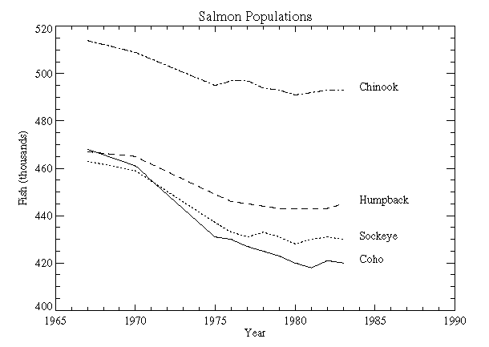

Note: Please see the TEXT function, which replicates the functionality of this routine and offers an interactive interface.
The XYOUTS procedure draws text on the currently-selected Direct Graphics device starting at the designated coordinate.
Arguments X , Y , and String can be any combination of scalars or arrays. If the arguments are arrays, multiple strings are output.
If the optional X and Y arguments are omitted, the text is positioned at the end of the most recently output text string.
Important keywords that control the appearance and positioning of the text include: ALIGNMENT, the justification of the text; CHARSIZE, the size of the text; FONT, chooses between vector drawn and hardware fonts; COLOR, the color of the text; and ORIENTATION, the angle between the baseline of the text and the horizontal. With hardware fonts, most of the text attributes, (e.g., size and orientation), are predetermined and not changeable.
Note: Specify the Z coordinate with the Z keyword when positioning text in three dimensions.
XYOUTS, [ X , Y ,] String [, ALIGNMENT = value {0.0 to 1.0}] [, CHARSIZE = value ] [, CHARTHICK = value ] [, TEXT_AXES ={0 | 1 | 2 | 3 | 4 | 5}] [, WIDTH = variable ]
Graphics Keywords: [, CLIP = [X 0 , Y 0 , X 1 , Y 1 ] ] [, COLOR = value ][, / DATA | , / DEVICE | , / NORMAL ] [, FONT = integer ] [, ORIENTATION = ccw_degrees_from_horiz ] [, / NOCLIP ] [, / T3D ] [, Z = value ]
The horizontal and vertical coordinates used to position the string(s). X and Y are normally interpreted in data coordinates. The DEVICE and NORMAL keywords can be used to specify the coordinate units.
X and Y can be arrays of positions if String is an array.
The string(s) to be output. This argument can be a scalar string or an array of strings. If this argument is not a string, it is converted prior to use using the default formatting rules. If String is an array, X , Y , and the COLOR keyword can also be arrays so that each string can have a separate location and color.
Specifies the alignment of the text baseline. An alignment of 0.0 (the default) aligns the left edge of the text baseline with the given ( x , y ) coordinate. An alignment of 1.0 right-justifies the text, while 0.5 results in text centered over the point ( x , y ).
The overall character size for the annotation. A CHARSIZE of 1.0 is normal. Setting CHARSIZE = -1 suppresses output of the text string. This keyword has no effect when used with the hardware drawn fonts; for exceptions, see Scaled Hardware Fonts .
The line thickness of the vector drawn font characters. This keyword has no effect when used with the hardware drawn fonts; for exceptions, see Scaled Hardware Fonts . The default value is 1.0.
This keyword specifies the plane of vector drawn text when three-dimensional plotting is enabled. By default, text is drawn in the plane of the XY axes. The horizontal text direction is in the X plane, and the vertical text direction is in the Y plane. Values for this keyword can range from 0 to 5, with the following effects: 0 for XY, 1 for XZ, 2 for YZ, 3 for YX, 4 for ZX, and 5 for ZY. The notation ZY means that the horizontal direction of the text lies in the Z plane, and the vertical direction of the text is drawn in the Y plane.
Set this keyword to a named variable in which to return the width of the text string, in normalized coordinate units.
See Direct Graphics Keywords for the description of the following graphics and plotting keywords:
CLIP , COLOR , DATA , DEVICE , FONT , NOCLIP , NORMAL , ORIENTATION , T3D , Z
Print the string “This is text” at device coordinate position (100,100):
XYOUTS, 100, 100, 'This is text', /DEVICE
Print an array of strings with each element of the array printed at a different location. Use larger text than in the previous example:
XYOUTS, [0, 200, 250], [200, 50, 100], $
['This', 'is', 'text'], CHARSIZE = 3, /DEVICE
Determine the text size for a window device before opening an on-screen window:
WINDOW, /FREE, /PIXMAP, XSIZE=myWinXSize, YSIZE=myWinYSize
XYOUTS, 'Check this out', WIDTH=w
WDELETE
myWinXSize and myWinYSize are chosen to match your onscreen window. Since we can not know the characteristics of a given device (such as character size) until a window has been opened, the PIXMAP keyword to WINDOW allows you to compute appropriate dimensions for text with an invisible window before displaying a window on your screen.
This example adds to the example shown in OPLOT Procedure by annotating each graph with its name. This plot is exactly the same as the OPLOT example except that the x -axis range is extended to the year 1990 to allow room for the titles. To accomplish this, the keyword parameter XRANGE = [1967, 1990] was added to the call to PLOT. A string vector, NAMES, containing the names of each sample population also is defined.
|
 |
First, we define an array containing names for each of the lines plotted. (This array is also defined by the plot01 batch file.)
NAMES=['Coho','Sockeye','Humpback','Chinook']
The plot was produced with the following statements:
; Define variables:
@plot01
; Index of last point:
N1 = N_ELEMENTS(YEAR) - 1
; Plot first graph. Set the y-axis min and max
; from the min and max of all data sets. Default linestyle is 0.
PLOT, YEAR, COHO, YRANGE = [MIN(ALLPTS), MAX(ALLPTS)], $
TITLE='Salmon Populations', XTITLE = 'Year', $
YTITLE = 'Fish (thousands)', XRANGE = [1965, 1990], $
/XSTYLE
; Loop for the three remaining scores, varying the linestyle:
FOR I = 1, 3 DO OPLOT, YEAR, ALLPTS[*, I], LINE = I
; Append the title of each graph on the right:
FOR I = 0, 3 DO XYOUTS, 1984, ALLPTS[N1, I], NAMES[I]
Note: If IDL does not find the batch file, the required directory may not be in your IDL search path. All of the files mentioned are located in the examples/doc/plot subdirectory of the IDL distribution. By default, this directory is part of IDL ’s path; if you have not changed your path, you will be able to run the examples as described here. See !PATH for information on modifying IDL ’s path.
The previous example illustrates the use of a PostScript font (Times-Roman, in this case) for the titles and annotations. Note that PostScript fonts can only be used when the current graphics devices is set to PostScript.
This font was selected by first setting the default font, controlled by the system variable !P.FONT, to the hardware-font index of zero, and then calling the DEVICE procedure to set the Times-Roman font.
Example Code: To recreate the plot using this font on your system enter @plot02 at the IDL command prompt. You can also inspect the batch file plot02 , located in the examples/doc/plot subdirectory of the IDL distribution. Running this batch files creates a PostScript file named plot.ps in your current working directory.
Note: Because not all devices have selectable hardware fonts, default hardware fonts vary.
One example of hardware fonts which can be scaled are PostScript fonts. If you are using PostScript fonts, the keywords CHARTHICK and CHARSIZE will have an effect on a call to XYOUTS. Of the devices we provide that support hardware fonts, only the PostScript device uses scalable PostScript fonts for its “hardware” font system. All other devices use a bitmapped font technology.
Scaling is related to whether or not a device supports Hershey formatting commands when hardware fonts are used. Formatting requires the ability to scale the text on a per-character basis (i.e. for subscripting). To see if a given device supports Hershey formatting when hardware fonts are used, look at bit 12 of !D.FLAGS. You can also use this indicator to determine whether or not the hardware fonts will be scaled.
|
Original |
Introduced |